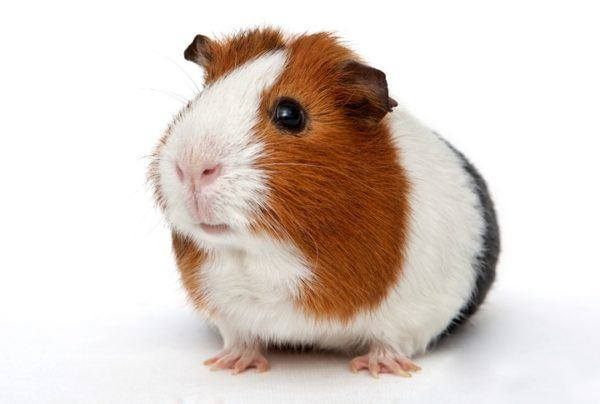

Cobaya
Las cobayas son una especie sociable y les gusta disfrutar de periodos de descanso a lo largo del día, por lo que se echará más de una siesta, ¡así que no la despiertes si ves que duerme mucho! Es totalmente normal en ellas. Al ser amigables se llevan genial con niños a partir de los seis años. Por lo que los más pequeños de la casa podrán responsabilizarse con el cuidado del nuevo miembro de la familia.
